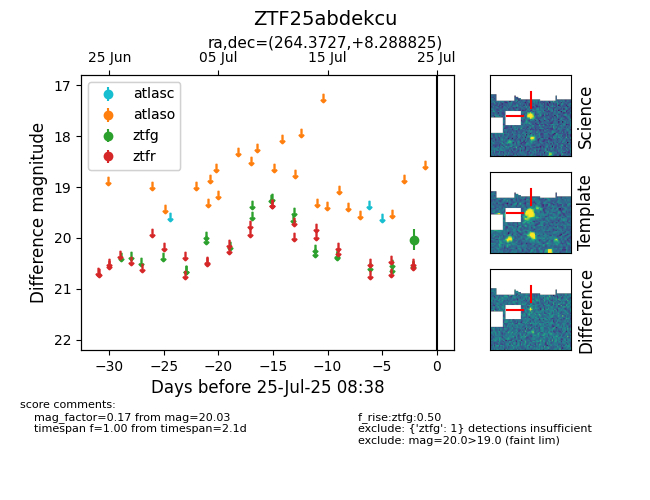

Target ZTF25abdekcu at 2025-07-25 08:38, see:
FINK: fink-portal.org/ZTF25abdekcu
Lasair: lasair-ztf.lsst.ac.uk/objects/ZTF25abdekcu
ALeRCE: alerce.online/object/ZTF25abdekcu
alt names
ZTF25abdekcu (ztf,fink)
coordinates:
equatorial (ra, dec) = (264.3727,+8.28883)
galactic (l, b) = (32.0301,+20.18124)
photometry
last ztfg=20.03
1 ztfg detections
